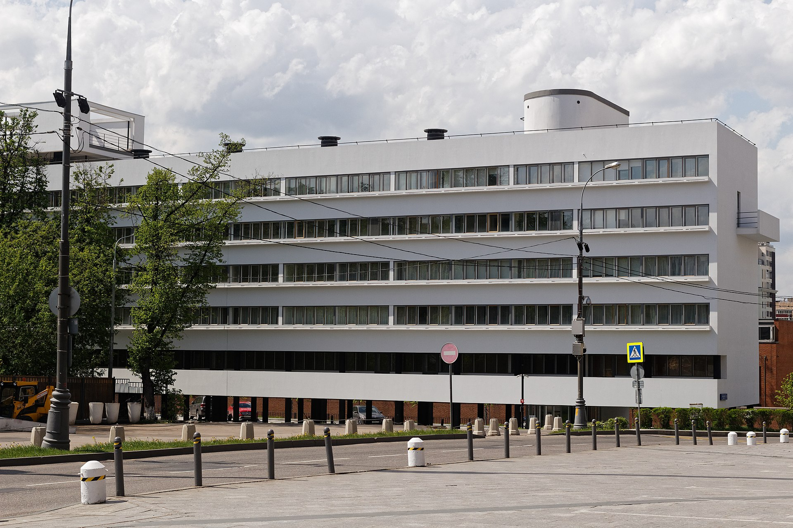

Дом Наркомфина – жилой дом переходного типа
Дом Наркомфина — один из знаковых памятников архитектуры советского авангарда и конструктивизма. Построен в 1928—1930 годах по проекту архитекторов Моисея Гинзбурга, Игнатия Милиниса и инженера Сергея Прохорова для работников Народного комиссариата финансов СССР (Наркомфина).
С начала 1990-х годов, дом находился в аварийном состоянии, был трижды включён в список «100 главных зданий мира, которым грозит уничтожение»
История создания дома Наркомфина
Из всех различных индивидуумов и групп, занимавшихся реформированием повседневной жизни и консолидации социализма в 1920-е годы архитекторы занимали исключительное положение. Архитектурная инновация Дома Коммуны представляет наиболее полную попытку осуществления реформирования быта и консолидации советского социализма.
Идеология
Дом Наркомфина переходного типа (от «буржуазного дома» к «социалистической коммуне») хотя и содержал в себе ранее существовавшие «буржуазные» квартиры, был структурирован таким образом, чтобы облегчить переход индивида к полностью социализированной жизни.
Гинзбург критически оценивал так называемое моссоветовское строительство («массовое жилищное строительство Москвы первых лет после революции»), считал «экономический эффект» доходного дома более высоким.
Усиление влияния промышленных работниц на широкие массы трудящихся женщин, рост активности работниц, поднятие их классового самосознания и культурного уровня требуют дальнейшего увеличения женского труда на производстве. Принятый пятилетний план народного хозяйства обеспечивает огромный рост промышленности на базе реконструкции и социалистической рационализации, которая в отличие от капиталистической рационализации, основанной на эксплуатации рабочей силы, даёт возможность без ущерба для функций материнства расширять применение женского труда в производстве, в том числе и в тяжёлой индустрии.